Applications II: TGP Data Set
Jonathon Chow
2022-09-25
Source:vignettes/application_tgp.Rmd
application_tgp.RmdIntroduction
The 1000 Genomes Project (TGP), launched in January 2008, was an international research effort to establish by far the most detailed catalogue of human genetic variation. Scientists planned to sequence the genomes of at least one thousand anonymous participants from a number of different ethnic groups within the following three years, using newly developed technologies which were faster and less expensive. In 2012, the sequencing of 1092 genomes was announced in a Nature publication (Abecasis et al. 2012), marking the completion of the first phase of the 1000 Genomes Project. The 1000 Genomes Project has completed three phases so far. See here for more information.
Data Sources and Preprocessing
We use the TGP data of the first phase. We download the data in PLINK format from here. We rename the data to the following form.
TGP
├── TGP.bed
├── TGP.bim
├── TGP.fam We use the R package genio to read in the PLINK format document and convert the gene data into a genotype matrix, each element of which represents the observed number of copies of minor allele at marker j of person i. The rows of the matrix represent individuals and the columns of the matrix represent SNPs. Now we preprocess the data. We first remove the rows with a missing rate greater than 0.5%, and then we assign the remaining missing values to the mode, which is 0. In order to ensure the feasibility of the iterative algorithm, we delete rows with the same row value. We store the processed data as data_TGP_full.rda.
library(genio)
# Load data TGP.
TGP <- read_plink('TGP/TGP.bed')
data_TGP_full <- TGP$X
# Filters rows with missing values.
NA_TGP <- which(rowSums(is.na(data_TGP_full)) > 0)
# Remove rows with more than 0.5% NA.
data_TGP_full <- data_TGP_full[which(rowMeans(is.na(data_TGP_full)) < 0.005), ]
# Assign the missing value to 0.
data_TGP_full[is.na(data_TGP_full)] <- 0
# Delete rows with the same row value.
same_TGP <- vector()
for(i in 1:nrow(data_TGP_full))
{
if(length(unique(data_TGP_full[i, ])) == 1)
{
same_TGP <- c(same_TGP, i)
}
}
data_TGP_full <- data_TGP_full[-same_TGP, ]
# Save data.
save(data_TGP_full, file="data_TGP_full.rda") In order to simplify the data processing and conform to the setting of the model, we randomly selected 5000 SNPs from the complete data and transposed the matrix. We stored these data as data_TGP.rda.
# A random sample of 5000 SNPs.
data_TGP <- t(data_TGP_full[sample(c(1:nrow(data_TGP_full)), 5000), ])
# Save data.
save(data_TGP, file="data_TGP.rda") To make it easier to group the data, we download the table from here. We make corresponding tables TGP.tsv with three columns for individuals and populations of the TGP dataset. Superpop represents large populations, such as Asians, Africans, Europeans. Pop represents small populations, such as Chinese, British, Norwegian. Indiv represents individuals.
We read this table into R and store it as map_TGP.rda.
# Reading a MAP File.
map_TGP <- read.table("TGP.tsv", header=T, sep="\t")
# Save data.
save(map_TGP, file="map_TGP.rda") data_TGP.rda and map_TGP.rda are the built-in data of AwesomePackage. You can find more information at Reference in AwesomePackage.
Fit the Data
We use the following four algorithms to fit the sampled data for different K, and collect the evaluation indicators of the fitting results.
EM algorithm
result_TGP_em_K2 <- psd_fit_em(data_TGP, 2, 1e-5, 2000)
# [=========>-----------------------------------------------------] 320/2000 ( 1m)
result_TGP_em_K3 <- psd_fit_em(data_TGP, 3, 1e-5, 2000)
# [===========>---------------------------------------------------] 390/2000 ( 2m)
result_TGP_em_K4 <- psd_fit_em(data_TGP, 4, 1e-5, 2000)
# [==============================>--------------------------------] 980/2000 (10m)
result_TGP_em_K5 <- psd_fit_em(data_TGP, 5, 1e-5, 2000)
# [==================>--------------------------------------------] 590/2000 ( 8m)
result_TGP_em_K6 <- psd_fit_em(data_TGP, 6, 1e-5, 2000)
# [==================>--------------------------------------------] 610/2000 (11m)
result_TGP_em_K7 <- psd_fit_em(data_TGP, 7, 1e-5, 2000)
# [=======================>---------------------------------------] 760/2000 (17m)
result_TGP_em_K8 <- psd_fit_em(data_TGP, 8, 1e-5, 2000)
# [==============================>--------------------------------] 970/2000 (28m)
result_TGP_em_K9 <- psd_fit_em(data_TGP, 9, 1e-5, 2000)
# [=======================>---------------------------------------] 760/2000 (26m)
result_TGP_em_K10 <- psd_fit_em(data_TGP, 10, 1e-5, 2000)
# [=========================>-------------------------------------] 830/2000 (39m)
result_TGP_em_K11 <- psd_fit_em(data_TGP, 11, 1e-5, 2000)
# [=============================>---------------------------------] 960/2000 ( 1h)
result_TGP_em_K12 <- psd_fit_em(data_TGP, 12, 1e-5, 2000)
# [============================>----------------------------------] 920/2000 ( 1h)
result_TGP_em_K13 <- psd_fit_em(data_TGP, 13, 1e-5, 2000)
# [===========================>-----------------------------------] 890/2000 ( 1h)
result_TGP_em_K14 <- psd_fit_em(data_TGP, 14, 1e-5, 2000)
# [==============================>-------------------------------] 1010/2000 ( 1h)
result_TGP_em_K15 <- psd_fit_em(data_TGP, 15, 1e-5, 2000)
# [================================>-----------------------------] 1080/2000 ( 2h) We store the result as result_TGP_em.RData.
SQP algorithm
result_TGP_sqp_K2 <- psd_fit_sqp(data_TGP, 2, 1e-5, 200, 200)
# [================================================================] 200/200 (44s)
# [=========>-------------------------------------------------------] 30/200 (29s)
result_TGP_sqp_K3 <- psd_fit_sqp(data_TGP, 3, 1e-5, 200, 200)
# [================================================================] 200/200 ( 1m)
# [=========>-------------------------------------------------------] 30/200 ( 1m)
result_TGP_sqp_K4 <- psd_fit_sqp(data_TGP, 4, 1e-5, 200, 200)
# [================================================================] 200/200 ( 2m)
# [============>----------------------------------------------------] 40/200 ( 2m)
result_TGP_sqp_K5 <- psd_fit_sqp(data_TGP, 5, 1e-5, 200, 200)
# [================================================================] 200/200 ( 2m)
# [============>----------------------------------------------------] 40/200 ( 4m)
result_TGP_sqp_K6 <- psd_fit_sqp(data_TGP, 6, 1e-5, 200, 200)
# [================================================================] 200/200 ( 3m)
# [============>----------------------------------------------------] 40/200 ( 6m)
result_TGP_sqp_K7 <- psd_fit_sqp(data_TGP, 7, 1e-5, 200, 500)
# [================================================================] 500/500 (11m)
# [===============>-------------------------------------------------] 50/200 (10m)
result_TGP_sqp_K8 <- psd_fit_sqp(data_TGP, 8, 1e-5, 200, 500)
# [================================================================] 500/500 (14m)
# [============>----------------------------------------------------] 40/200 (10m)
result_TGP_sqp_K9 <- psd_fit_sqp(data_TGP, 9, 1e-5, 200, 500)
# [================================================================] 500/500 (17m)
# [============>----------------------------------------------------] 40/200 (13m)
result_TGP_sqp_K10 <- psd_fit_sqp(data_TGP, 10, 1e-5, 200, 500)
# [================================================================] 500/500 (23m)
# [===================>---------------------------------------------] 60/200 (26m)
result_TGP_sqp_K11 <- psd_fit_sqp(data_TGP, 11, 1e-5, 200, 500)
# [================================================================] 500/500 (26m)
# [===================>---------------------------------------------] 60/200 (32m)
result_TGP_sqp_K12 <- psd_fit_sqp(data_TGP, 12, 1e-5, 200, 800)
# [================================================================] 800/800 (50m)
# [===================>---------------------------------------------] 60/200 (40m)
result_TGP_sqp_K13 <- psd_fit_sqp(data_TGP, 13, 1e-5, 200, 800)
# [================================================================] 800/800 ( 1h)
# [======================>------------------------------------------] 70/200 ( 1h)
result_TGP_sqp_K14 <- psd_fit_sqp(data_TGP, 14, 1e-5, 200, 800)
# [================================================================] 800/800 ( 1h)
# [===============================>--------------------------------] 100/200 ( 2h)
result_TGP_sqp_K15 <- psd_fit_sqp(data_TGP, 15, 1e-5, 200, 800)
# [================================================================] 800/800 ( 1h)
# [=========================>---------------------------------------] 80/200 ( 2h) We store the result as result_TGP_sqp.RData.
VI algorithm
result_TGP_vi_K2 <- psd_fit_vi(data_TGP, 2, 1e-5, 2000)
# [==========>----------------------------------------------------] 350/2000 ( 1m)
result_TGP_vi_K3 <- psd_fit_vi(data_TGP, 3, 1e-5, 2000)
# [==============>------------------------------------------------] 480/2000 ( 2m)
result_TGP_vi_K4 <- psd_fit_vi(data_TGP, 4, 1e-5, 2000)
# [================================>-----------------------------] 1050/2000 ( 4m)
result_TGP_vi_K5 <- psd_fit_vi(data_TGP, 5, 1e-5, 2000)
# [==========================>------------------------------------] 870/2000 ( 4m)
result_TGP_vi_K6 <- psd_fit_vi(data_TGP, 6, 1e-5, 2000)
# [=================================>----------------------------] 1090/2000 ( 6m)
result_TGP_vi_K7 <- psd_fit_vi(data_TGP, 7, 1e-5, 2000)
# [===============================>------------------------------] 1030/2000 ( 7m)
result_TGP_vi_K8 <- psd_fit_vi(data_TGP, 8, 1e-5, 2000)
# [===================================>--------------------------] 1160/2000 ( 8m)
result_TGP_vi_K9 <- psd_fit_vi(data_TGP, 9, 1e-5, 2000)
# [======================================================>-------] 1760/2000 (13m)
result_TGP_vi_K10 <- psd_fit_vi(data_TGP, 10, 1e-5, 2000)
# [================================================>-------------] 1590/2000 (13m)
result_TGP_vi_K11 <- psd_fit_vi(data_TGP, 11, 1e-5, 2000)
# [=====================================>------------------------] 1240/2000 (11m)
result_TGP_vi_K12 <- psd_fit_vi(data_TGP, 12, 1e-5, 2000)
# [==========================================>-------------------] 1380/2000 (13m)
result_TGP_vi_K13 <- psd_fit_vi(data_TGP, 13, 1e-5, 2000)
# [====================================================>---------] 1720/2000 (17m)
result_TGP_vi_K14 <- psd_fit_vi(data_TGP, 14, 1e-5, 2000)
# [==============================>-------------------------------] 1000/2000 (10m)
result_TGP_vi_K15 <- psd_fit_vi(data_TGP, 15, 1e-5, 2000)
# [=========================================================>----] 1870/2000 (31m) We store the result as result_TGP_vi.RData.
SVI algorithm
result_TGP_svi_K2_sample <- psd_fit_svi(data_TGP, 2,
1e-5, 5e+5, 1e+4, 3,
100, 2000,
5e-2, 1e-1,
1, 0.5)
# [==========>-------------------------------------------------] 90000/5e+05 ( 8m)
result_TGP_svi_K3_sample <- psd_fit_svi(data_TGP, 3,
1e-5, 5e+5, 1e+4, 3,
100, 2000,
5e-2, 1e-1,
1, 0.5)
# [=================>-----------------------------------------] 150000/5e+05 (18m)
result_TGP_svi_K4_sample <- psd_fit_svi(data_TGP, 4,
1e-5, 5e+5, 1e+4, 3,
100, 2000,
5e-2, 1e-1,
1, 0.5)
# [===========>------------------------------------------------] 1e+05/5e+05 (14m)
result_TGP_svi_K5_sample <- psd_fit_svi(data_TGP, 5,
1e-5, 5e+5, 1e+4, 3,
100, 2000,
5e-2, 1e-1,
1, 0.5)
# [==============>--------------------------------------------] 130000/5e+05 (19m)
result_TGP_svi_K6_sample <- psd_fit_svi(data_TGP, 6,
1e-5, 5e+5, 1e+4, 3,
100, 2000,
5e-2, 1e-1,
1, 0.5)
# [=======================>------------------------------------] 2e+05/5e+05 (33m)
result_TGP_svi_K7_sample <- psd_fit_svi(data_TGP, 7,
1e-5, 5e+5, 1e+4, 3,
100, 2000,
5e-2, 1e-1,
1, 0.5)
# [=======================>------------------------------------] 2e+05/5e+05 (35m)
result_TGP_svi_K8_sample <- psd_fit_svi(data_TGP, 8,
1e-5, 5e+5, 1e+4, 3,
100, 2000,
5e-2, 1e-1,
1, 0.5)
# [==========================>--------------------------------] 230000/5e+05 (44m)
result_TGP_svi_K9_sample <- psd_fit_svi(data_TGP, 9,
1e-5, 5e+5, 1e+4, 3,
100, 2000,
5e-2, 1e-1,
1, 0.5)
# [============>----------------------------------------------] 110000/5e+05 (22m)
result_TGP_svi_K10_sample <- psd_fit_svi(data_TGP, 10,
1e-5, 5e+5, 1e+4, 3,
100, 2000,
5e-2, 1e-1,
1, 0.5)
# [===========================>-------------------------------] 240000/5e+05 ( 1h)
result_TGP_svi_K11_sample <- psd_fit_svi(data_TGP, 11,
1e-5, 5e+5, 1e+4, 3,
100, 2000,
5e-2, 1e-1,
1, 0.5)
# [=================>-----------------------------------------] 150000/5e+05 (34m)
result_TGP_svi_K12_sample <- psd_fit_svi(data_TGP, 12,
1e-5, 5e+5, 1e+4, 3,
100, 2000,
5e-2, 1e-1,
1, 0.5)
# [==================>----------------------------------------] 160000/5e+05 (37m)
result_TGP_svi_K13_sample <- psd_fit_svi(data_TGP, 13,
1e-5, 5e+5, 1e+4, 3,
100, 2000,
5e-2, 1e-1,
1, 0.5)
# [===========>------------------------------------------------] 1e+05/5e+05 (23m)
result_TGP_svi_K14_sample <- psd_fit_svi(data_TGP, 14,
1e-5, 5e+5, 1e+4, 3,
100, 2000,
5e-2, 1e-1,
1, 0.5)
# [=======================>------------------------------------] 2e+05/5e+05 ( 1h)
result_TGP_svi_K15_sample <- psd_fit_svi(data_TGP, 15,
1e-5, 5e+5, 1e+4, 3,
100, 2000,
5e-2, 1e-1,
1, 0.5)
# [================>------------------------------------------] 140000/5e+05 (39m) We store the result as result_TGP_svi.RData.
Evaluation indicators
loglikelihood_TGP_em <- vector()
error_TGP_em <- vector()
for (i in 2:15)
{
result <- get(paste("result_TGP_em_K", i, sep=""))
loglikelihood_TGP_em <- c(loglikelihood_TGP_em,
result$L[length(result$L)])
error_TGP_em <- c(error_TGP_em,
psd_error(data_TGP, result))
}
rm(result)
rm(i)
loglikelihood_TGP_sqp <- vector()
error_TGP_sqp <- vector()
for (i in 2:15)
{
result <- get(paste("result_TGP_sqp_K", i, sep=""))
loglikelihood_TGP_sqp <- c(loglikelihood_TGP_sqp,
result$L[length(result$L)])
error_TGP_sqp <- c(error_TGP_sqp,
psd_error(data_TGP, result))
}
rm(result)
rm(i)
ELBO_TGP_vi <- vector()
loglikelihood_TGP_vi <- vector()
error_TGP_vi <- vector()
for (i in 2:15)
{
result <- get(paste("result_TGP_vi_K", i, sep=""))
ELBO_TGP_vi <- c(ELBO_TGP_vi,
result$L[length(result$L)])
loglikelihood_TGP_vi <- c(loglikelihood_TGP_vi,
psd_loglikelihood(data_TGP, result))
error_TGP_vi <- c(error_TGP_vi,
psd_error(data_TGP, result))
}
rm(result)
rm(i)
ind_J <- sample(2, ncol(data_TGP), replace = TRUE, prob = c(1 - 5e-2, 5e-2))
ind_I <- sample(2, nrow(data_TGP), replace = TRUE, prob = c(1 - 1e-1, 1e-1))
data_TGP_val <- data_TGP[ind_I == 2, ind_J == 2]
loglikelihood_TGP_svi <- vector()
for (i in 2:15)
{
P_val <- get(paste("result_TGP_svi_K", i, "_sample", sep=""))$P[ind_I == 2, ]
loglikelihood_TGP_svi <- c(loglikelihood_TGP_svi,
psd_loglikelihood_svi(data_TGP_val, i, P_val))
}
rm(ind_J)
rm(ind_I)
rm(data_TGP_val)
rm(P_val)
rm(i) We store the result as result_TGP_evaluate.RData.
Choose K
We import the data directly.
load(system.file("extdata", "result_TGP_evaluate.RData", package = "AwesomePackage", mustWork = TRUE)) Criteria for choosing K: When there is no obvious gap in indicators, the smaller K is preferred.
plot_index_vs_K(list(loglikelihood_TGP_em, loglikelihood_TGP_sqp, loglikelihood_TGP_vi),
c("em", "sqp", "vi"), index.id = "loglik")We notice that the log-likelihood curves of EM and SQP have a continuous upward trend, which is due to the fact that there is no prior distribution constraint, which is prone to overfitting. The log-likelihood curves of EM and SQP slow down from K equals 4.
The log-likelihood curve of VI flattens out from about K equals 4, and shows that the optimal K is 12.
plot_index_vs_K(list(loglikelihood_TGP_svi),
"svi", index.id = "loglik")
The log-likelihood curve of SVI is relatively irregular for three reasons. First, we use different training and validation sets to fit different K. Although we finally fixed the validation set when calculating the log-likelihood on the validation set, this was based on the assumption that the data are equivalent. Second, our convergence criterion may be relatively loose, resulting in some cases that do not really converge to the optimal value. Third, the sensitivity of the algorithm to the initial value leads to large errors in a single measurement.
The log-likelihood curve of SVI shows that the optimal K is 11, and 8, 9, 10, and 11 are all good choices for K.
plot_index_vs_K(list(error_TGP_em, error_TGP_sqp, error_TGP_vi),
c("em", "sqp", "vi"), index.id = "error")
The error curves of EM, SQP and VI are almost identical with the log-likelihood curves of EM, SQP and VI.
plot_index_vs_K(list(ELBO_TGP_vi),
"vi", index.id = "elbo")The ELBO curve of VI shows the curve oscillating from K equals 3.
In conclusion, we note that when K is around 4, the fit is already doing very well. The optimal K should be reached around 11, but from the structure diagram, the populations appear redundant at this time.
Full Data
We only fit the complete data for the relatively good K using SVI algorithm.
result_TGP_svi_K7_full <- psd_fit_svi(t(data_TGP_full), 7,
1e-5, 1e+6, 1e+4, 5,
100, 2000,
5e-3, 1e-1,
1, 0.5)
# [========>--------------------------------------------------] 160000/1e+06 (34m)
result_TGP_svi_K8_full <- psd_fit_svi(t(data_TGP_full), 8,
1e-5, 1e+6, 1e+4, 5,
100, 2000,
5e-3, 1e-1,
1, 0.5)
# [===========>------------------------------------------------] 2e+05/1e+06 (47m)
result_TGP_svi_K9_full <- psd_fit_svi(t(data_TGP_full), 9,
1e-5, 1e+6, 1e+4, 5,
100, 2000,
5e-3, 1e-1,
1, 0.5)
# [========>--------------------------------------------------] 160000/1e+06 (40m)
result_TGP_svi_K10_full <- psd_fit_svi(t(data_TGP_full), 10,
1e-5, 1e+6, 1e+4, 5,
100, 2000,
5e-3, 1e-1,
1, 0.5)
# [=====>------------------------------------------------------] 1e+05/1e+06 (27m)
result_TGP_svi_K11_full <- psd_fit_svi(t(data_TGP_full), 11,
1e-5, 1e+6, 1e+4, 5,
100, 2000,
5e-3, 1e-1,
1, 0.5)
# [====>-------------------------------------------------------] 80000/1e+06 (23m) We store the result as result_TGP_full.RData.
We import the data directly.
load(system.file("extdata", "result_TGP_full.RData", package = "AwesomePackage", mustWork = TRUE))
label <- rownames(data_TGP)
lpop <- unlist(map_TGP[1])
spop <- unlist(map_TGP[2])
indiv <- unlist(map_TGP[3])
plot_structure(result_TGP_svi_K7_full$P,
label = label, map.indiv = indiv, map.pop = lpop, gap = 5,
title = "Data Set: TGP (full) | Method: SVI | K: 7")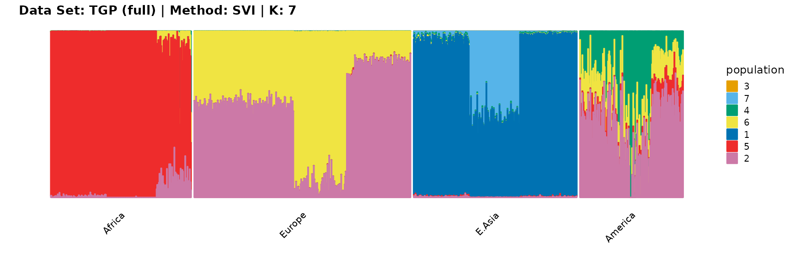
plot_structure(result_TGP_svi_K8_full$P,
label = label, map.indiv = indiv, map.pop = lpop, gap = 5,
title = "Data Set: TGP (full) | Method: SVI | K: 8")
plot_structure(result_TGP_svi_K9_full$P,
label = label, map.indiv = indiv, map.pop = lpop, gap = 5,
title = "Data Set: TGP (full) | Method: SVI | K: 9")
plot_structure(result_TGP_svi_K10_full$P,
label = label, map.indiv = indiv, map.pop = lpop, gap = 5,
title = "Data Set: TGP (full) | Method: SVI | K: 10")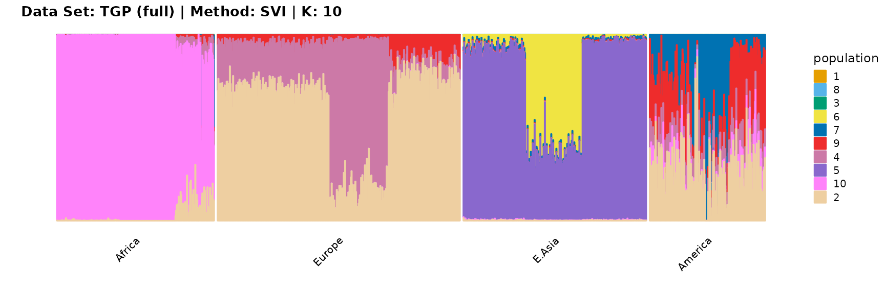
plot_structure(result_TGP_svi_K11_full$P,
label = label, map.indiv = indiv, map.pop = lpop, gap = 5,
title = "Data Set: TGP (full) | Method: SVI | K: 11")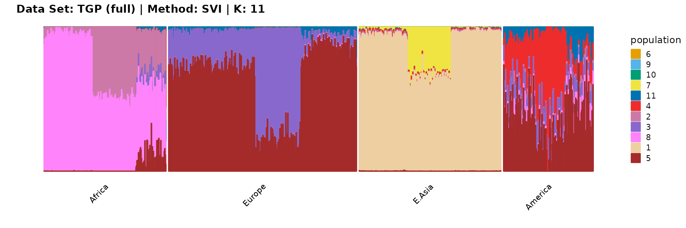
Literature Cited
Appendix A
load(system.file("extdata", "result_TGP_em.RData", package = "AwesomePackage", mustWork = TRUE))
load(system.file("extdata", "result_TGP_sqp.RData", package = "AwesomePackage", mustWork = TRUE))
load(system.file("extdata", "result_TGP_vi.RData", package = "AwesomePackage", mustWork = TRUE))
load(system.file("extdata", "result_TGP_svi.RData", package = "AwesomePackage", mustWork = TRUE))
plot_loss(list(result_TGP_em_K2$Loss[-1], result_TGP_sqp_K2$Loss[-1],
result_TGP_vi_K2$Loss[-1]), c("em", "em & sqp", "vi"), 10,
title = "Data Set: TGP | K: 2")
plot_loss(list(result_TGP_em_K3$Loss[-1], result_TGP_sqp_K3$Loss[-1],
result_TGP_vi_K3$Loss[-1]), c("em", "em & sqp", "vi"), 10,
title = "Data Set: TGP | K: 3")
plot_loss(list(result_TGP_em_K4$Loss[-1], result_TGP_sqp_K4$Loss[-1],
result_TGP_vi_K4$Loss[-1]), c("em", "em & sqp", "vi"), 10,
title = "Data Set: TGP | K: 4")

plot_loss(list(result_TGP_em_K5$Loss[-1], result_TGP_sqp_K5$Loss[-1],
result_TGP_vi_K5$Loss[-1]), c("em", "em & sqp", "vi"), 10,
title = "Data Set: TGP | K: 5")
plot_loss(list(result_TGP_em_K6$Loss[-1], result_TGP_sqp_K6$Loss[-1],
result_TGP_vi_K6$Loss[-1]), c("em", "em & sqp", "vi"), 10,
title = "Data Set: TGP | K: 6")
plot_loss(list(result_TGP_em_K7$Loss[-1], result_TGP_sqp_K7$Loss[-1],
result_TGP_vi_K7$Loss[-1]), c("em", "em & sqp", "vi"), 10,
title = "Data Set: TGP | K: 7")
plot_loss(list(result_TGP_em_K8$Loss[-1], result_TGP_sqp_K8$Loss[-1],
result_TGP_vi_K8$Loss[-1]), c("em", "em & sqp", "vi"), 10,
title = "Data Set: TGP | K: 8")
plot_loss(list(result_TGP_em_K9$Loss[-1], result_TGP_sqp_K9$Loss[-1],
result_TGP_vi_K9$Loss[-1]), c("em", "em & sqp", "vi"), 10,
title = "Data Set: TGP | K: 9")
plot_loss(list(result_TGP_em_K10$Loss[-1], result_TGP_sqp_K10$Loss[-1],
result_TGP_vi_K10$Loss[-1]), c("em", "em & sqp", "vi"), 10,
title = "Data Set: TGP | K: 10")
plot_loss(list(result_TGP_em_K11$Loss[-1], result_TGP_sqp_K11$Loss[-1],
result_TGP_vi_K11$Loss[-1]), c("em", "em & sqp", "vi"), 10,
title = "Data Set: TGP | K: 11")
plot_loss(list(result_TGP_em_K12$Loss[-1], result_TGP_sqp_K12$Loss[-1],
result_TGP_vi_K12$Loss[-1]), c("em", "em & sqp", "vi"), 10,
title = "Data Set: TGP | K: 12")
plot_loss(list(result_TGP_em_K13$Loss[-1], result_TGP_sqp_K13$Loss[-1],
result_TGP_vi_K13$Loss[-1]), c("em", "em & sqp", "vi"), 10,
title = "Data Set: TGP | K: 13")
plot_loss(list(result_TGP_em_K14$Loss[-1], result_TGP_sqp_K14$Loss[-1],
result_TGP_vi_K14$Loss[-1]), c("em", "em & sqp", "vi"), 10,
title = "Data Set: TGP | K: 14")Appendix B
plot_structure(result_TGP_em_K2$P,
label = label, map.indiv = indiv, map.pop = lpop, gap = 5,
title = "Data Set: TGP | Method: EM | K: 2")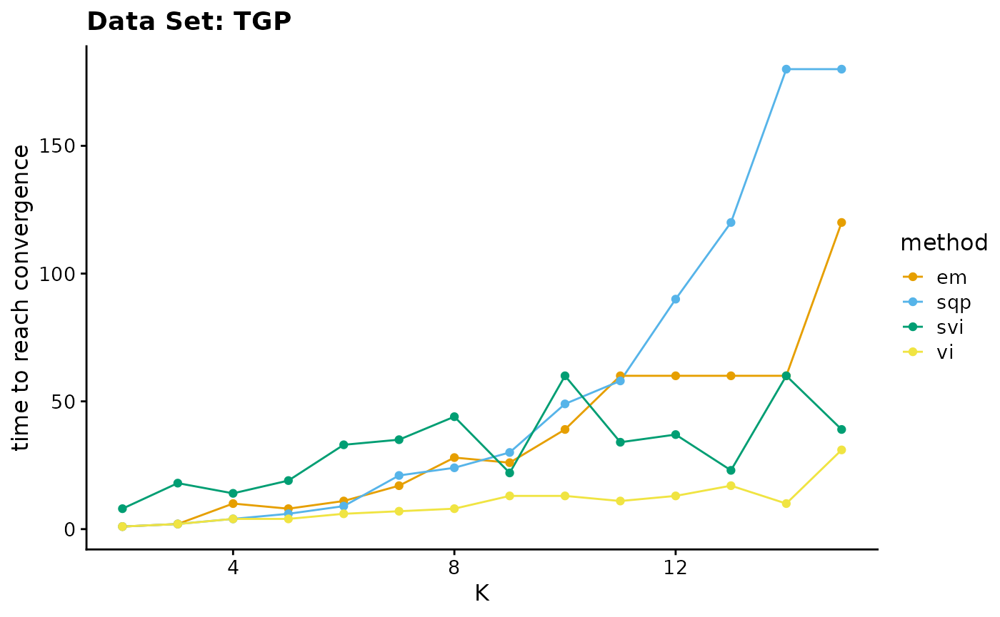
plot_structure(result_TGP_em_K3$P,
label = label, map.indiv = indiv, map.pop = lpop, gap = 5,
title = "Data Set: TGP | Method: EM | K: 3")
plot_structure(result_TGP_em_K4$P,
label = label, map.indiv = indiv, map.pop = lpop, gap = 5,
title = "Data Set: TGP | Method: EM | K: 4")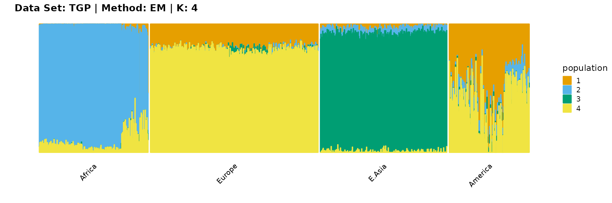
plot_structure(result_TGP_em_K5$P,
label = label, map.indiv = indiv, map.pop = lpop, gap = 5,
title = "Data Set: TGP | Method: EM | K: 5")
plot_structure(result_TGP_em_K6$P,
label = label, map.indiv = indiv, map.pop = lpop, gap = 5,
title = "Data Set: TGP | Method: EM | K: 6")
plot_structure(result_TGP_em_K7$P,
label = label, map.indiv = indiv, map.pop = lpop, gap = 5,
title = "Data Set: TGP | Method: EM | K: 7")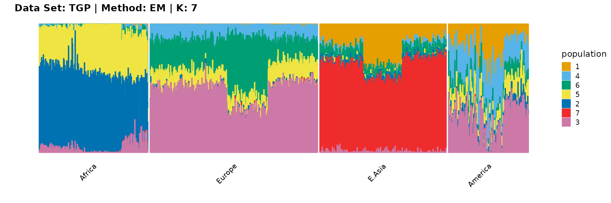
plot_structure(result_TGP_em_K8$P,
label = label, map.indiv = indiv, map.pop = lpop, gap = 5,
title = "Data Set: TGP | Method: EM | K: 8")
plot_structure(result_TGP_em_K9$P,
label = label, map.indiv = indiv, map.pop = lpop, gap = 5,
title = "Data Set: TGP | Method: EM | K: 9")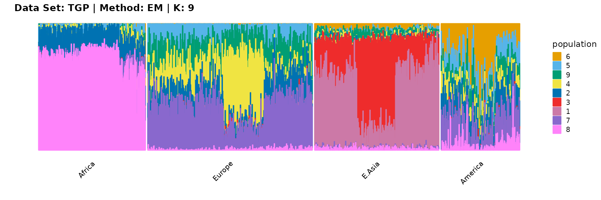
plot_structure(result_TGP_em_K10$P,
label = label, map.indiv = indiv, map.pop = lpop, gap = 5,
title = "Data Set: TGP | Method: EM | K: 10")
plot_structure(result_TGP_em_K11$P,
label = label, map.indiv = indiv, map.pop = lpop, gap = 5,
title = "Data Set: TGP | Method: EM | K: 11")
plot_structure(result_TGP_em_K12$P,
label = label, map.indiv = indiv, map.pop = lpop, gap = 5,
title = "Data Set: TGP | Method: EM | K: 12")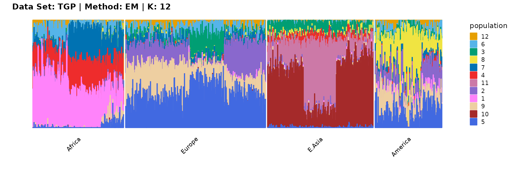
plot_structure(result_TGP_em_K13$P,
label = label, map.indiv = indiv, map.pop = lpop, gap = 5,
title = "Data Set: TGP | Method: EM | K: 13")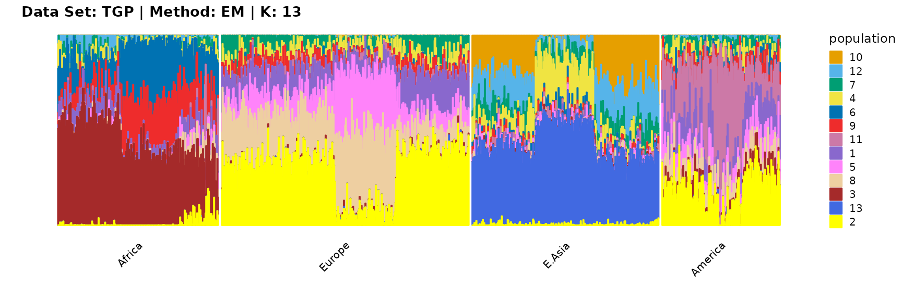
plot_structure(result_TGP_em_K14$P,
label = label, map.indiv = indiv, map.pop = lpop, gap = 5,
title = "Data Set: TGP | Method: EM | K: 14")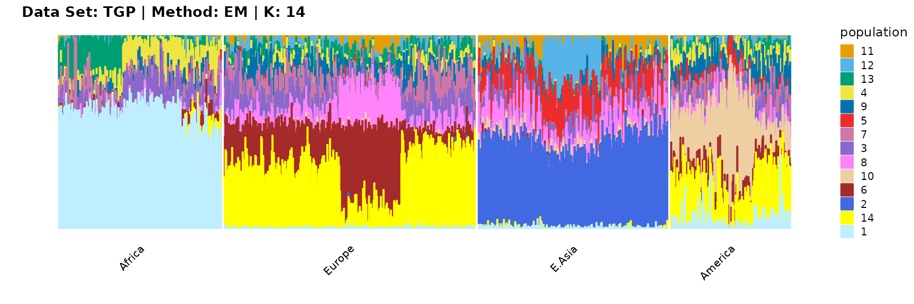
plot_structure(result_TGP_em_K15$P,
label = label, map.indiv = indiv, map.pop = lpop, gap = 5,
title = "Data Set: TGP | Method: EM | K: 15")
plot_structure(result_TGP_sqp_K2$P,
label = label, map.indiv = indiv, map.pop = lpop, gap = 5,
title = "Data Set: TGP | Method: SQP | K: 2")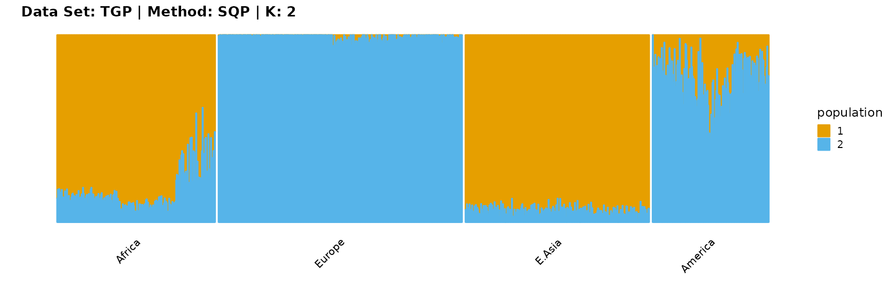
plot_structure(result_TGP_sqp_K3$P,
label = label, map.indiv = indiv, map.pop = lpop, gap = 5,
title = "Data Set: TGP | Method: SQP | K: 3")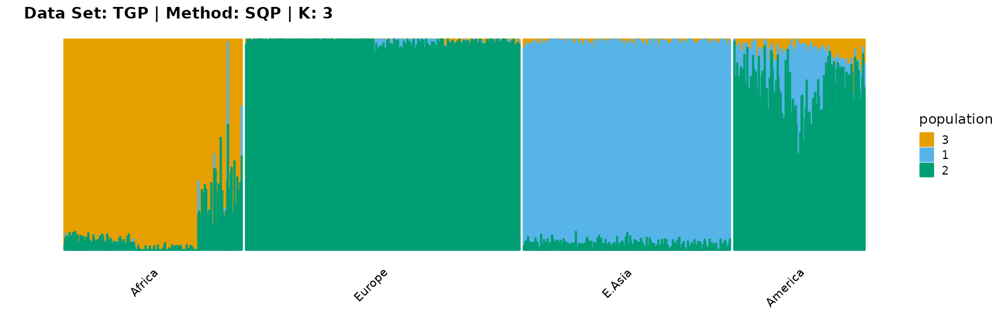
plot_structure(result_TGP_sqp_K4$P,
label = label, map.indiv = indiv, map.pop = lpop, gap = 5,
title = "Data Set: TGP | Method: SQP | K: 4")
plot_structure(result_TGP_sqp_K5$P,
label = label, map.indiv = indiv, map.pop = lpop, gap = 5,
title = "Data Set: TGP | Method: SQP | K: 5")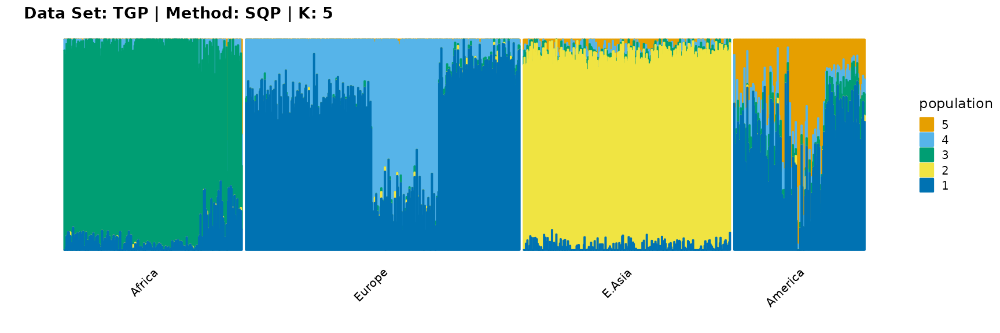
plot_structure(result_TGP_sqp_K6$P,
label = label, map.indiv = indiv, map.pop = lpop, gap = 5,
title = "Data Set: TGP | Method: SQP | K: 6")
plot_structure(result_TGP_sqp_K7$P,
label = label, map.indiv = indiv, map.pop = lpop, gap = 5,
title = "Data Set: TGP | Method: SQP | K: 7")
plot_structure(result_TGP_sqp_K8$P,
label = label, map.indiv = indiv, map.pop = lpop, gap = 5,
title = "Data Set: TGP | Method: SQP | K: 8")
plot_structure(result_TGP_sqp_K9$P,
label = label, map.indiv = indiv, map.pop = lpop, gap = 5,
title = "Data Set: TGP | Method: SQP | K: 9")
plot_structure(result_TGP_sqp_K10$P,
label = label, map.indiv = indiv, map.pop = lpop, gap = 5,
title = "Data Set: TGP | Method: SQP | K: 10")
plot_structure(result_TGP_sqp_K11$P,
label = label, map.indiv = indiv, map.pop = lpop, gap = 5,
title = "Data Set: TGP | Method: SQP | K: 11")
plot_structure(result_TGP_sqp_K12$P,
label = label, map.indiv = indiv, map.pop = lpop, gap = 5,
title = "Data Set: TGP | Method: SQP | K: 12")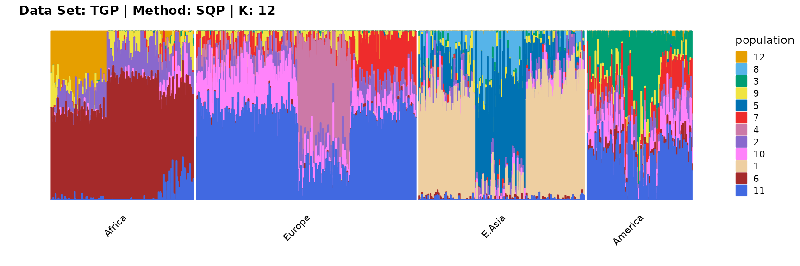
plot_structure(result_TGP_sqp_K13$P,
label = label, map.indiv = indiv, map.pop = lpop, gap = 5,
title = "Data Set: TGP | Method: SQP | K: 13")
plot_structure(result_TGP_sqp_K14$P,
label = label, map.indiv = indiv, map.pop = lpop, gap = 5,
title = "Data Set: TGP | Method: SQP | K: 14")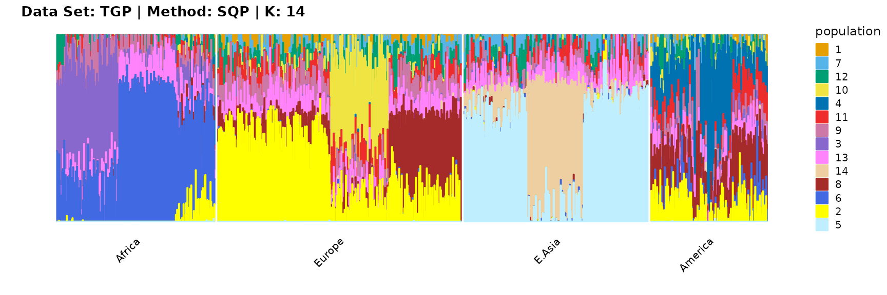
plot_structure(result_TGP_sqp_K15$P,
label = label, map.indiv = indiv, map.pop = lpop, gap = 5,
title = "Data Set: TGP | Method: SQP | K: 15")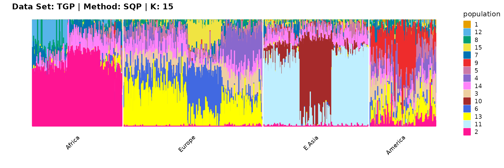
plot_structure(result_TGP_vi_K2$P,
label = label, map.indiv = indiv, map.pop = lpop, gap = 5,
title = "Data Set: TGP | Method: VI | K: 2")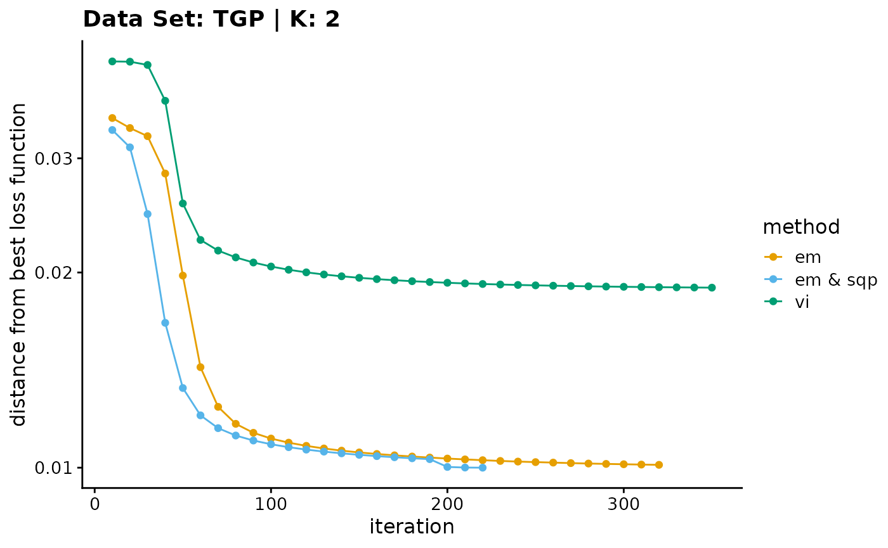
plot_structure(result_TGP_vi_K3$P,
label = label, map.indiv = indiv, map.pop = lpop, gap = 5,
title = "Data Set: TGP | Method: VI | K: 3")
plot_structure(result_TGP_vi_K4$P,
label = label, map.indiv = indiv, map.pop = lpop, gap = 5,
title = "Data Set: TGP | Method: VI | K: 4")
plot_structure(result_TGP_vi_K5$P,
label = label, map.indiv = indiv, map.pop = lpop, gap = 5,
title = "Data Set: TGP | Method: VI | K: 5")
plot_structure(result_TGP_vi_K6$P,
label = label, map.indiv = indiv, map.pop = lpop, gap = 5,
title = "Data Set: TGP | Method: VI | K: 6")
plot_structure(result_TGP_vi_K7$P,
label = label, map.indiv = indiv, map.pop = lpop, gap = 5,
title = "Data Set: TGP | Method: VI | K: 7")
plot_structure(result_TGP_vi_K8$P,
label = label, map.indiv = indiv, map.pop = lpop, gap = 5,
title = "Data Set: TGP | Method: VI | K: 8")
plot_structure(result_TGP_vi_K9$P,
label = label, map.indiv = indiv, map.pop = lpop, gap = 5,
title = "Data Set: TGP | Method: VI | K: 9")
plot_structure(result_TGP_vi_K10$P,
label = label, map.indiv = indiv, map.pop = lpop, gap = 5,
title = "Data Set: TGP | Method: VI | K: 10")
plot_structure(result_TGP_vi_K11$P,
label = label, map.indiv = indiv, map.pop = lpop, gap = 5,
title = "Data Set: TGP | Method: VI | K: 11")
plot_structure(result_TGP_vi_K12$P,
label = label, map.indiv = indiv, map.pop = lpop, gap = 5,
title = "Data Set: TGP | Method: VI | K: 12")
plot_structure(result_TGP_vi_K13$P,
label = label, map.indiv = indiv, map.pop = lpop, gap = 5,
title = "Data Set: TGP | Method: VI | K: 13")
plot_structure(result_TGP_vi_K14$P,
label = label, map.indiv = indiv, map.pop = lpop, gap = 5,
title = "Data Set: TGP | Method: VI | K: 14")
plot_structure(result_TGP_vi_K15$P,
label = label, map.indiv = indiv, map.pop = lpop, gap = 5,
title = "Data Set: TGP | Method: VI | K: 15")
plot_structure(result_TGP_svi_K2_sample$P,
label = label, map.indiv = indiv, map.pop = lpop, gap = 5,
title = "Data Set: TGP | Method: SVI | K: 2")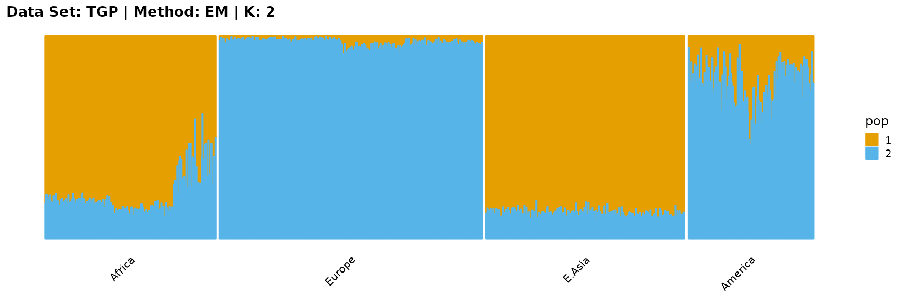
plot_structure(result_TGP_svi_K3_sample$P,
label = label, map.indiv = indiv, map.pop = lpop, gap = 5,
title = "Data Set: TGP | Method: SVI | K: 3")
plot_structure(result_TGP_svi_K4_sample$P,
label = label, map.indiv = indiv, map.pop = lpop, gap = 5,
title = "Data Set: TGP | Method: SVI | K: 4")
plot_structure(result_TGP_svi_K5_sample$P,
label = label, map.indiv = indiv, map.pop = lpop, gap = 5,
title = "Data Set: TGP | Method: SVI | K: 5")
plot_structure(result_TGP_svi_K6_sample$P,
label = label, map.indiv = indiv, map.pop = lpop, gap = 5,
title = "Data Set: TGP | Method: SVI | K: 6")
plot_structure(result_TGP_svi_K7_sample$P,
label = label, map.indiv = indiv, map.pop = lpop, gap = 5,
title = "Data Set: TGP | Method: SVI | K: 7")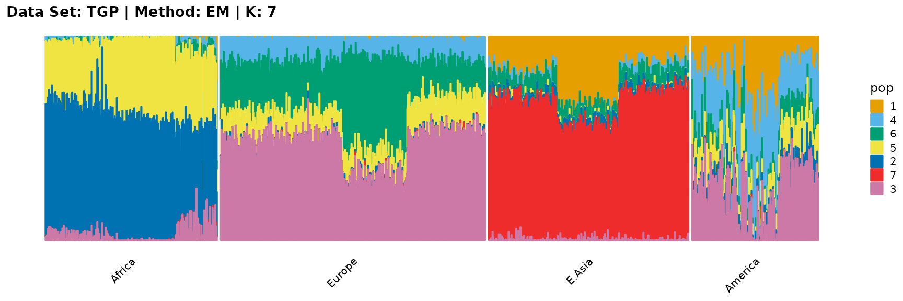
plot_structure(result_TGP_svi_K8_sample$P,
label = label, map.indiv = indiv, map.pop = lpop, gap = 5,
title = "Data Set: TGP | Method: SVI | K: 8")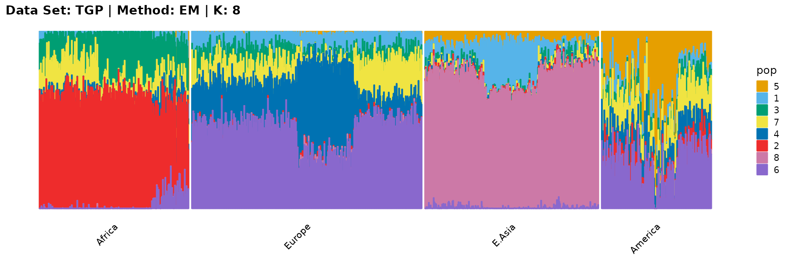
plot_structure(result_TGP_svi_K9_sample$P,
label = label, map.indiv = indiv, map.pop = lpop, gap = 5,
title = "Data Set: TGP | Method: SVI | K: 9")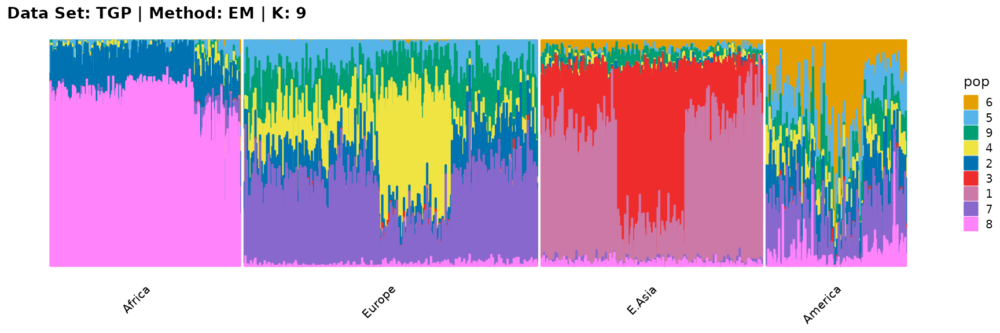
plot_structure(result_TGP_svi_K10_sample$P,
label = label, map.indiv = indiv, map.pop = lpop, gap = 5,
title = "Data Set: TGP | Method: SVI | K: 10")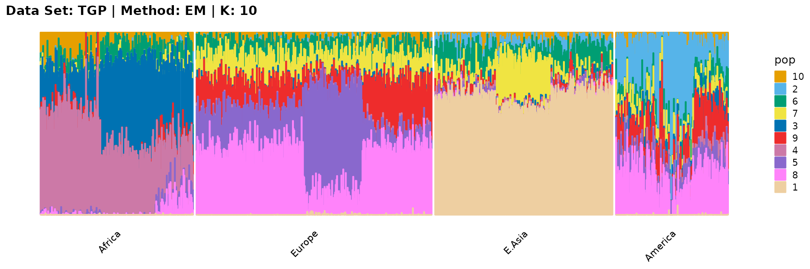
plot_structure(result_TGP_svi_K11_sample$P,
label = label, map.indiv = indiv, map.pop = lpop, gap = 5,
title = "Data Set: TGP | Method: SVI | K: 11")
plot_structure(result_TGP_svi_K12_sample$P,
label = label, map.indiv = indiv, map.pop = lpop, gap = 5,
title = "Data Set: TGP | Method: SVI | K: 12")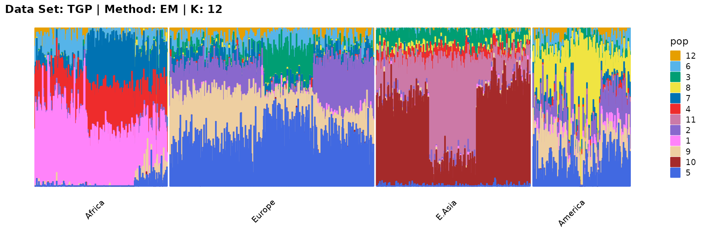
plot_structure(result_TGP_svi_K13_sample$P,
label = label, map.indiv = indiv, map.pop = lpop, gap = 5,
title = "Data Set: TGP | Method: SVI | K: 13")
plot_structure(result_TGP_svi_K14_sample$P,
label = label, map.indiv = indiv, map.pop = lpop, gap = 5,
title = "Data Set: TGP | Method: SVI | K: 14")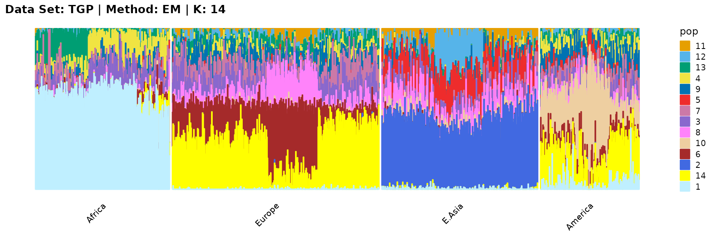
plot_structure(result_TGP_svi_K15_sample$P,
label = label, map.indiv = indiv, map.pop = lpop, gap = 5,
title = "Data Set: TGP | Method: SVI | K: 15")